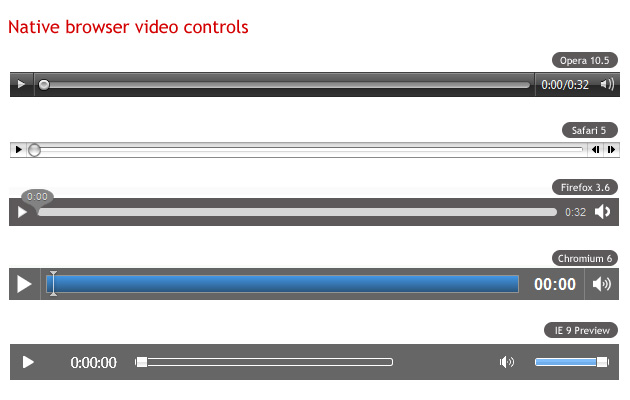
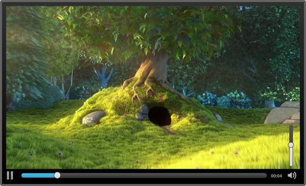
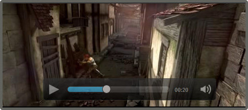

Building a custom HTML5 video player with CSS3 and jQuery
Introduction
The HTML5 <video> element is already supported by most modern browsers, and even IE has support announced for version 9. There are many advantages of having video embedded natively in the browser (covered in the article Introduction to HTML5 video by Bruce Lawson), so many developers are trying to use it as soon as possible. There are a couple of barriers to this that remain, most notably the problem of which codecs are supported in each browser, with a disagreement between Opera/Firefox and IE/Safari. That might not be a problem for much longer though, with Google recently releasing the VP8 codec, and the WebM project coming into existence. Opera, Firefox, Chrome and IE9 all have support in final builds, developer builds, or at least support announced for this format, and Flash will be able to play VP8. This means that we will soon be able to create a single version of the video that will play in the <video> element in most browsers, and the Flash Player in those that don't support WebM natively.
The other major barrier to consider is building up a custom HTML5 <video> player — this is where a Flash-only solution currently has an advantage, with the powerful Flash IDE providing an easy interface with which to create a customized video player component. IF we want to write a customised player for the HTML5 <video> element we need to handcode all the HTML5, CSS3, JavaScript, and any other open standards we want to use to build a player!
And this is where this article comes in. This is the first of a series in which we will look at building up an easily customizable HTML5 <video> player, including packaging it as a simple jQuery plugin, choosing control types and outputting custom CSS for your own situation. In this article we will look at:
- Video controls
- Basic markup for controls
- Packaging the player as a jQuery plugin
- Look and Feel
- Themeing the player
We'll use jQuery for easier DOM manipulation, and jQuery UI for the slider controls used for seeking and changing the volume level. To build a scalable solution, we'll wrap everything up in a jQuery plugin.
Video controls
As professional web designers, we want to create a video player that looks consistent across browsers. Each browser however provides its own different look and feel for the player, from the minimal approach of Firefox and Chrome, to the more shiny controls of Opera and Safari (see Figure 1 for the controls in each browser). If we want our controls to look the same across all browsers, and integrate with our own design, we'll have to create our own controls from scratch. This is not as hard as it seems.

Figure 1: Native browser video controls across different browsers
All media elements in HTML5 support the media elements API, which we can access using JavaScript and use to easily wire up functions such as play, pause, etc. to any buttons we create. Because the native video player plays nicely with other open web technologies, we can create our controls using HTML, CSS, SVG or whatever else we like.
Basic markup for controls
First, we'll need to create the actual markup for the video controls. We'll need a Play/Pause button, a seek bar, a timer and a volume button and slider. We'll insert the markup for the controls after the <video> element, and wrap them up in another element.
<div class="ghinda-video-controls">
<a class="ghinda-video-play" title="Play/Pause"></a>
<div class="ghinda-video-seek"></div>
<div class="ghinda-video-timer">00:00</div>
<div class="ghinda-volume-box">
<div class="ghinda-volume-slider"></div>
<a class="ghinda-volume-button" title="Mute/Unmute"></a>
</div>
</div>
We've used classes instead of IDs for all elements, to be able to use the same code for multiple video players on the same page.
Packaging the player as a jQuery plugin
After creating the markup we'll have to tie our elements to the media elements API, in order to control the video's behavior. As noted before, we'll package the player as a jQuery plugin, which will also aid reuse on multiple elements.
AUTHOR'S NOTE: I'm going to assume you are familiar with the basic anatomy of a jQuery plugin, and JavaScript, so I'm only briefly going to explain the script. If you need more information on these subjects, consult Craig Buckler's How to develop a jQuery plugin tutorial, and the JavaScript section of the Opera web standards curriculum.
$.fn.gVideo = function(options) {
// build main options before element iteration
var defaults = {
theme: 'simpledark',
childtheme: ''
};
var options = $.extend(defaults, options);
// iterate and reformat each matched element
return this.each(function() {
var $gVideo = $(this);
//create html structure
//main wrapper
var $video_wrap = $('<div></div>').addClass('ghinda-video-player').addClass(options.theme).addClass(options.childtheme);
//controls wraper
var $video_controls = $('<div class="ghinda-video-controls"><a class="ghinda-video-play" title="Play/Pause"></a><div class="ghinda-video-seek"></div><div class="ghinda-video-timer">00:00</div><div class="ghinda-volume-box"><div class="ghinda-volume-slider"></div><a class="ghinda-volume-button" title="Mute/Unmute"></a></div></div>');
$gVideo.wrap($video_wrap);
$gVideo.after($video_controls);Here we are using jQuery to create the video player markup dynamically (but not the video player itself), and removing the controls attribute once the script loads. That's because in cases where the user has JavaScript disabled, these controls will be useless, and he/she won't even get the native browser controls to the video element. It makes a lot more sense to start with the controls attribute present in case the script fails to load, and then removing it so the player will use our custom controls only after the script successfully loads.
Next, we'll have to target each of the elements in the controls, in order to be able to add listeners.
//get newly created elements
var $video_container = $gVideo.parent('.ghinda-video-player');
var $video_controls = $('.ghinda-video-controls', $video_container);
var $ghinda_play_btn = $('.ghinda-video-play', $video_container);
var $ghinda_video_seek = $('.ghinda-video-seek', $video_container);
var $ghinda_video_timer = $('.ghinda-video-timer', $video_container);
var $ghinda_volume = $('.ghinda-volume-slider', $video_container);
var $ghinda_volume_btn = $('.ghinda-volume-button', $video_container);
$video_controls.hide(); // keep the controls hiddenWe're targeting each control by its class; we'll keep the controls hidden until everything is ready.
Now for the Play/Pause controls:
var gPlay = function() {
if($gVideo.attr('paused') == false) {
$gVideo[0].pause();
} else {
$gVideo[0].play();
}
};
$ghinda_play_btn.click(gPlay);
$gVideo.click(gPlay);
$gVideo.bind('play', function() {
$ghinda_play_btn.addClass('ghinda-paused-button');
});
$gVideo.bind('pause', function() {
$ghinda_play_btn.removeClass('ghinda-paused-button');
});
$gVideo.bind('ended', function() {
$ghinda_play_btn.removeClass('ghinda-paused-button');
});
Most browsers provide a secondary set of controls for the video in the right-click (ctrl-click on a Mac) context menu. Because of the way we are putting this together, if a user activated these alternative controls it would break our custom controls. In order to avoid this we're attaching events to the Play/Pause button itself, and the "Play", "Pause" and "Ended" listeners of the video player.
We're also adding and removing classes from our button to change the look of it, depending on the state of the video (Playing or Paused).
For creating the seek slider we'll use the jQuery UI Slider component.
var createSeek = function() {
if($gVideo.attr('readyState')) {
var video_duration = $gVideo.attr('duration');
$ghinda_video_seek.slider({
value: 0,
step: 0.01,
orientation: "horizontal",
range: "min",
max: video_duration,
animate: true,
slide: function(){
seeksliding = true;
},
stop:function(e,ui){
seeksliding = false;
$gVideo.attr("currentTime",ui.value);
}
});
$video_controls.show();
} else {
setTimeout(createSeek, 150);
}
};
createSeek();As you can see, we're using a recursive function, while reading the readyState of the video. We have to keep polling the video until it is ready, otherwise we can't determine the duration, and can't create the slider. Once the video is ready, we initialize the slider, and also show the controls.
Next we'll create the timer, and attach it to the timeupdate listener of the video element.
var gTimeFormat=function(seconds){
var m=Math.floor(seconds/60)<10?"0"+Math.floor(seconds/60):Math.floor(seconds/60);
var s=Math.floor(seconds-(m*60))<10?"0"+Math.floor(seconds-(m*60)):Math.floor(seconds-(m*60));
return m+":"+s;
};
var seekUpdate = function() {
var currenttime = $gVideo.attr('currentTime');
if(!seeksliding) $ghinda_video_seek.slider('value', currenttime);
$ghinda_video_timer.text(gTimeFormat(currenttime));
};
$gVideo.bind('timeupdate', seekUpdate);Here we're using the seekUpdate function to get the currentTime attribute of the video, and the gTimeFormat function to format the actual value received.
For the volume controls, we'll also use the jQuery UI slider and a custom function on the volume button for muting and un-muting the video.
$ghinda_volume.slider({
value: 1,
orientation: "vertical",
range: "min",
max: 1,
step: 0.05,
animate: true,
slide:function(e,ui){
$gVideo.attr('muted',false);
video_volume = ui.value;
$gVideo.attr('volume',ui.value);
}
});
var muteVolume = function() {
if($gVideo.attr('muted')==true) {
$gVideo.attr('muted', false);
$ghinda_volume.slider('value', video_volume);
$ghinda_volume_btn.removeClass('ghinda-volume-mute');
} else {
$gVideo.attr('muted', true);
$ghinda_volume.slider('value', '0');
$ghinda_volume_btn.addClass('ghinda-volume-mute');
};
};
$ghinda_volume_btn.click(muteVolume);Finally we're going the remove the controls attribute from the <video>, because by this point our own custom controls are set up and we want to use those instead of the browser defaults.
$gVideo.removeAttr('controls');Now that we have our plugin all done, we can call it on any video element we want, like so.
$('video').gVideo();This will call the plugin on all the video elements on the page.
Look and Feel
And now for the fun part, the look and feel of the video player. Once the plugin is ready, customizing the controls is really easy with a little bit of CSS. As you've notice we haven't added any styling to the controls. We'll use CSS3 for all the customizations regarding the player.
First, we'll add some style to the main video player container. We'll use this as the main chrome for the player.
.ghinda-video-player {
float: left;
padding: 10px;
border: 5px solid #61625d;
-moz-border-radius: 5px; /* FF1+ */
-ms-border-radius: 5px; /* IE future proofing */
-webkit-border-radius: 5px; /* Saf3+, Chrome */
border-radius: 5px; /* Opera 10.5, IE 9 */
background: #000000;
background-image: -moz-linear-gradient(top, #313131, #000000); /* FF3.6 */
background-image: -webkit-gradient(linear,left top,left bottom,color-stop(0, #313131),color-stop(1, #000000)); /* Saf4+, Chrome */
box-shadow: inset 0 15px 35px #535353;
}We've floated it left, to prevent it from expanding to the full width of the player, instead keeping it restrained to the width of the actual video element. We're using gradients and border radius to add polish, plus an inset box shadow to emulate the gradient effect in Opera, as it does not yet support gradients (as of 10.60, the latest version at the time of writing).
Next we'll float all the controls to the left, to align them horizontally. We'll use opacity and transitions on the Play/Pause and Volume Mute/Unmute buttons to create a nice hover effect.
.ghinda-video-play {
display: block;
width: 22px;
height: 22px;
margin-right: 15px;
background: url(../images/play-icon.png) no-repeat;
opacity: 0.7;
-moz-transition: all 0.2s ease-in-out; /* Firefox */
-ms-transition: all 0.2s ease-in-out; /* IE future proofing */
-o-transition: all 0.2s ease-in-out; /* Opera */
-webkit-transition: all 0.2s ease-in-out; /* Safari and Chrome */
transition: all 0.2s ease-in-out;
}
.ghinda-paused-button {
background: url(../images/pause-icon.png) no-repeat;
}
.ghinda-video-play:hover {
opacity: 1;
}I'm sure you followed the JavaScript part carefully, and saw that we're adding and removing classes on the Play/Pause button depending on the state of the video(Playing/Paused). That's why the ghida-paused-button class overwrites the background property of the ghinda-video-play class.
Now for the sliders. As you saw before, we're using the jQuery UI slider control for both the seek bar and the volume level. This component has its own styles defined in jQuery UI's stylesheet, but we'll completely overwrite these to make the look of the slider more in keeping with the rest of the player.
.ghinda-video-seek .ui-slider-handle {
width: 15px;
height: 15px;
border: 1px solid #333;
top: -4px;
-moz-border-radius:10px;
-ms-border-radius:10px;
-webkit-border-radius:10px;
border-radius:10px;
background: #e6e6e6;
background-image: -moz-linear-gradient(top, #e6e6e6, #d5d5d5);
background-image: -webkit-gradient(linear,left top,left bottom,color-stop(0, #e6e6e6),color-stop(1, #d5d5d5));
box-shadow: inset 0 -3px 3px #d5d5d5;
}
.ghinda-video-seek .ui-slider-handle.ui-state-hover {
background: #fff;
}
.ghinda-video-seek .ui-slider-range {
-moz-border-radius:15px;
-ms-border-radius:15px;
-webkit-border-radius:15px;
border-radius:15px;
background: #4cbae8;
background-image: -moz-linear-gradient(top, #4cbae8, #39a2ce);
background-image: -webkit-gradient(linear,left top,left bottom,color-stop(0, #4cbae8),color-stop(1, #39a2ce));
box-shadow: inset 0 -3px 3px #39a2ce;
}Currently the volume slider is also visible at all times, positioned next to the volume button. We'll change this so the slider is hidden by default, and shows up only when we're hovering the Mute/Unmute button, to make it look a bit more dynamic and neater. Again, transitions are our answer here:
.ghinda-volume-box {
height: 30px;
-moz-transition: all 0.1s ease-in-out; /* Firefox */
-ms-transition: all 0.1s ease-in-out; /* IE future proofing */
-o-transition: all 0.2s ease-in-out; /* Opera */
-webkit-transition: all 0.1s ease-in-out; /* Safari and Chrome */
transition: all 0.1s ease-in-out;
}
.ghinda-volume-box:hover {
height: 135px;
padding-top: 5px;
}
.ghinda-volume-slider {
visibility: hidden;
opacity: 0;
-moz-transition: all 0.1s ease-in-out; /* Firefox */
-ms-transition: all 0.1s ease-in-out; /* IE future proofing */
-o-transition: all 0.1s ease-in-out; /* Opera */
-webkit-transition: all 0.1s ease-in-out; /* Safari and Chrome */
transition: all 0.1s ease-in-out;
}
.ghinda-volume-box:hover .ghinda-volume-slider {
position: relative;
visibility: visible;
opacity: 1;
}We're hiding the volume slider by default, and giving the volume container a small fixed height that just fits the width of the volume button. We're also assigning transitions to both.
When the volume button is hovered, its height increases via the specified transition; we then use the .ghinda-volume-box:hover .ghinda-volume-slider descendant selector to transition the volume slider into view.
With basic CSS knowledge and some new CSS3 properties, we've already created a nice interface for our player, it looks like Figure 2:

Figure 2: Our finished video player.
Themeing the player
As you probably noticed, when creating the jQuery plugin, we've defined a set of default options. These options are theme and childtheme, and can be changed when calling the plugin, allowing us to easily apply custom themes as desired.
A theme represents a completely new set of CSS rules for every single control. A child theme on the other hand is a set of CSS rules that builds upon the rules of an existing theme, adding or overwriting the "parent" theme's style.
We can specify both of there options or only one, when calling the jQuery plugin.
$('video').gVideo({
childtheme:'smalldark'
});
In the above example code we are calling the plugin with the smalldark child theme specified. This will apply our default parent theme, and then apply our child theme over the top of it, overwriting a small portion of the rules set by the parent theme. See Figure 3 for the Smalldark theme in action.

Figure 3: the Smalldark child theme in action.
You can check out the final video player example live to see both themes in action.
The techniques contained within these articles about HTML5 <video> have resulted in a production-ready jQuery plugin. You can check out the latest version, and follow the development, on the Github repository for the Acorn Media Player. This code is up to date and actively maintained.
Summary
Building our own custom video player with HTML5 video, JavaScript and CSS3 is fairly easy. By using JavaScript only for the actual functionality of the controls, and CSS3 for everything that involves the look and feel of the player, we get a powerful, easily customizable solution.
HTML5 Video resources
- Introduction to HTML5 video
- Accessible HTML5 Video with JavaScripted captions
- Everything you need to know about HTML5 video and audio - and it really is everything!
<video>specification- How
<video>is implemented in Opera
This article is licensed under a Creative Commons Attribution-Noncommercial-Share Alike 3.0 Unported license.
Comments
The forum archive of this article is still available on My Opera.
-

Hi Ionut,
-

@supermatricola have you got the MP4 appearing first in the list? ther eis an iPad bug whereby it won't pick up the video it can play if it is not listed first in the list.
If that is not the problem, then I will need to defer this to the author. thanks!
-

Hi, nice article. It works with jquery 1.4.2 but when I'm using it with jquery 1.7.1 id doesn't show the controls. Does anyone know a fix for this?
-

Hi All,
-

Hallo, I want to say big thanks, everything works just great !
-

oh i used script and now it shows me the slider :)
-

@aijazaman
-

@angvisola glad you got it sorted out!
-

:) thanks for your answer, i have also - maybe strange - problem, for one special design i need two sliders for one video. I need maybe something like clone div video-seek with all his functions, but give him different name to be able change his padding in css. Is it possible?
-
@heawer: in 1.7.1, use $gVideo.prop('readyState') instead of .attr
-
Of course... .prop() works everywhere except IE.
-
Oh OK. I get it now; THIS page is using jQuery 1.7.1. The downloadable code does not work in 1.7.1, but works on the live demo page because the live demo page is using jQuery 1.4.2
-

First thanks for the great article,I need a small clarification to know before starting my project.I am starting to develop a new video player and I need to modify this code and redistribute it(ie..I need to sell my video player).So can you give me the clarification of the License.I would like to know in and out before doing anything.
-

when I first viewed this article a few months back, the demo played on my iPad. Now, it doesnt appear. Just a black screen. There seems to be some issue now with removing the controls and replacing them. Do you have any idea what could be happening?
-

I like the themes. In the source code, I see you are using "id's" and not classes? (referencing video1 and video2 for the child theme). This method only allows me to use them twice on any page obviously. So if I wanted to put 4 different videos using just the parent theme on the same page, what classes would I reference, I have tried your markup, with no luck - sorry but I'm a bit new to HTML5 video, but am trying to get acquainted with everything, including the JQuery script (thanks so much for the helpful breakdown there).
00:00
-

@bradr29 if you want to use classes instead - there is nothing stopping you - you could make your own up, and just change the references to them in the script. Let me know how you get on.
-

@tfairf Hrm, I seem to get a similar problem on my Galaxy tab. The video players load, but when you try to play the videos, they just don't appear. I'll ask the author if he has any ideas.
-

@iamcoolraju This article is under a non-commercial license, which would prohibit use of it under a commercial project. However, I am prepared to waive that condition, as long as your work included a link to the original article and a note of the orginal author. I am not sure if this extends to the source code though. If I were you, I would contact the author and ask about it. See http://ghinda.net/ for contact details.
-

How can I use a custom icon as a poisition marker?
-

@David Sienko
-

That's what I thought. But I haven't been able to get it to work.
-

@David Sienko have you got a test case you can point me at, so I can see what your code is doing?
-

Here's the code I've changed for the icon, and a link to the PNG I want to use. The images is in the same folder as the other PNG's used. I can see the size of the slider change, but can't see the image.
-

Figured it out, I left some of the other code and the shadow code.
-

So, I now have the the Tribes Orca whale Icon displayed and nice colors showing the progress, but I can't seem to figure out how to put the whale fin in alignment with the Progress of the video. I need to shift the slider handler back or the progress bar ahead about 7px. Any suggestions?
-

I have it all working great in all the major browsers, but it still hangs up in iOS. Any suggestions?
-
For everybody having issues with the video player version provided with the article, you can check out the maintained version of the HTML5 media player, that came out from this article and the "A more accessible HTML5 <video> player" article (http://dev.opera.com/articles/view/more-accessible-html5-video-player/), referring to accessibility on the player, from it's GitHub repo: https://github.com/ghinda/acornmediaplayer
-

@Ionut Colceriu: Thanks! I have also added this information into a note into the above article.
-
Thanks @Chris!
-

I need the exact same player as www.worldstarhiphop.com has. Can any one help me? Will pay for help.
-

want to implement something simliar to youtube player has. Like when a user drags his mouse over the seekbar he is able to see small thumbnails of the video at that future time over the seekbar.
-

hello im not sure how to put this all together . i created the css file,the js file with the plugin,linked the jquery 1.4.2 and other file i noticed others were using not sure if i need it. but i get a player but no custom controls just the default ones.
-
as a html5 fan, this article is very useful for me. thanks!
No new comments accepted.supermatricola
Friday, December 30, 2011
i'm trying to adapt this plugin to work on iPad unsuccessfully. The plugin works correctly on Safary Chrome and Firefox using respectively *.mp4/*.ogg video. When initialize the plugin the video doesn' t start (remains hidden behind) i also try binding on canplaythrough,load,progress events without success.
Do you understand the reason ? Can you help me to fix it?
Also on ipad the readyState event is not available I folded over HAVE_ENOUGH_DATA ...
Thanks Daniele
Chris Mills
Monday, January 9, 2012
heawer
Friday, February 10, 2012
aijazaman
Tuesday, February 14, 2012
This is a nice article, it is working fine with mp4 and ogv but i tried with flv and it is not working.
Can anyone suggest me or add sample code for flv player.
Thanks in advance....
angvisola
Friday, February 17, 2012
I have only one problem, i want my video autoplay when page is open, this works on firefox but not on safari..
i changed play and pause buttons( i just switch the pictures, too lazy to changing javascript code :)
angvisola
Friday, February 17, 2012
the code i used was
video controls ="controls" width="458" height="247" id="video1" autoplay="autoplay"
Chris Mills
Monday, February 20, 2012
It really depends on what you want me to do. It is pretty easy to provide a flash video player as a fallback for browsers that don't support HTML5 video - see http://dev.opera.com/articles/view/simple-html5-video-flash-fallback-custom-controls/. For guidance on this.
Chris Mills
Monday, February 20, 2012
angvisola
Thursday, February 23, 2012
i tried this $('.video-seek').clone().appendTo('.video-seek2'); but didnt work...
Thanks for any help !
Darren Cassidy
Thursday, February 23, 2012
Darren Cassidy
Friday, February 24, 2012
Darren Cassidy
Friday, February 24, 2012
iamcoolraju
Saturday, March 24, 2012
tfairf
Monday, March 26, 2012
bradr29
Thursday, March 29, 2012
Chris Mills
Monday, April 2, 2012
Chris Mills
Monday, April 2, 2012
Chris Mills
Monday, April 2, 2012
David Sienko
Thursday, April 19, 2012
Chris Mills
Friday, April 20, 2012
Should be pretty simple - it should be a matter of attaching a custom background image on to the current slider/drag handle. From looking at the example on Opera Dragonfly, I can see that the current graphic is just a div, made to look like a round button using border-radius.
David Sienko
Monday, April 23, 2012
Chris Mills
Tuesday, April 24, 2012
David Sienko
Monday, April 30, 2012
http://www.tulaliplushootseed.com/images/whale-solo-icon.png
The section of Code I changed:
.ghinda-video-player.simpledark .ghinda-video-seek .ui-slider-handle {
width: 27px;
height: 20px;
border: 1px solid #333;
top: -4px;
background: url(images/whale-solo-icon.png) no-repeat;
background: #e6e6e6;
background-image: -moz-linear-gradient(top, #e6e6e6, #d5d5d5);
background-image: -webkit-gradient(linear,left top,left bottom,color-stop(0, #e6e6e6),color-stop(1, #d5d5d5));
box-shadow: inset 0 -3px 3px #d5d5d5;
}
I also want to change the progree bar colors to a blue, so it looks like the whale is going through the water.
Dave
David Sienko
Monday, April 30, 2012
David Sienko
Monday, April 30, 2012
David Sienko
Wednesday, May 2, 2012
http://www.tulaliplushootseed.com/videos/HTML5-test-5-2-12.html With custom player
http://www.tulaliplushootseed.com/videos/HTML5-test-5-2-12b.html Without custom player.
Ionut Colceriu
Wednesday, May 23, 2012
It includes support for the latest jQuery, along with other improvements and fixes.
Chris Mills
Wednesday, May 23, 2012
Ionut Colceriu
Wednesday, May 23, 2012
Btw Pull Requests are very gladly accepted, especially for better mobile support, since I don't have many devices to test on.
james dean
Wednesday, July 25, 2012
aditya2ky
Friday, October 5, 2012
Any ideas how to implement this feature ???
itstudent
Thursday, November 1, 2012
thanks in advance for any help truly appreciated
feuyeux
Sunday, November 18, 2012